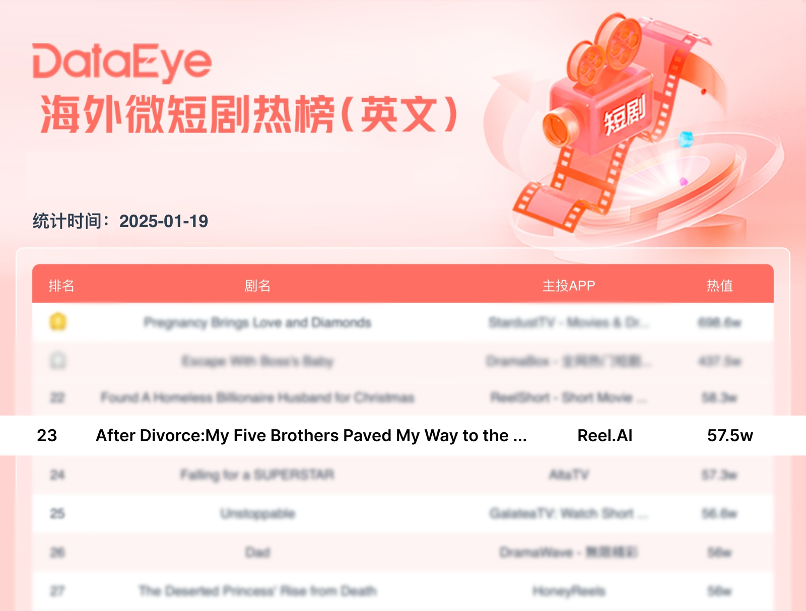

由崔伊执导，CreativeFitting 发行的 AI 出海短剧《After Divorce: My Five Brothers Paved My Way to the Billionaire Throne》（简称 “Five Brothers”）在众多真人实拍短剧中脱颖而出，登上海外微短剧热榜。这是全球首部跻身短剧票房畅销榜的 AI 短剧，标志着 AI 短剧在内容创作和市场拓展方面的巨大潜力，成功打破了行业对于 AI 是否能在影视行业达到用户付费标准的质疑，展现了 AI 驱动的创作力量和商业化能力。

《Five Brothers》是一部以 Emmy 为第一主角的大女主女频短剧，讲述了她如何在面对婚姻背叛、家庭冲突等一系列挑战后，勇敢地突破传统束缚和个人桎梏，最终实现自我救赎和成长的故事。

AIGC 给影视带来一种新的创作范式，给予导演更强的控制力与更自由的创作空间。我很高兴与 AI 短剧的领军者 CreativeFitting 合作，采用 AI 来完成一部完整的短剧并打开商业化市场，这预示了一场变革的开端，就像是 Matrix 照进了现实。
— 导演 崔伊
崔伊是一位 80 后导演，曾以主创身份参与《航拍中国》《楚国八百年》等多个千万量级影视项目。
CreativeFitting（井英科技）成立于 2021 年，旨在成为全球最大的 AIGC 内容平台。CreativeFitting 的 AI 短剧创作平台，其叙事型视频的生成能力达到全球行业领先水准，尤为擅长生成激发用户情感共鸣的短片，赋能创作者讲述引人入胜的故事。CreativeFitting 还运营了全球首款 AI 短剧 APP「Reel.AI」，打通 AI 短剧商业化发行闭环，为用户带来沉浸的 AI 原生娱乐体验。